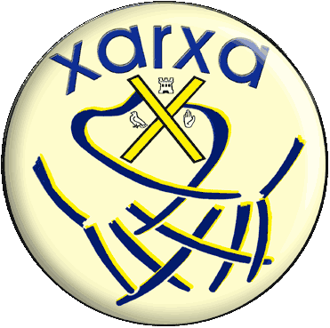

|  |
|
|||
| La
XarXa
és
una entitat de base associativa per agrupar voluntàriament totes les persones, per donar la possibilitat de donar una resposta social coordinada de tots i totes qui s'apleguen amb els objectius de defensa i promoció d'un model social diferent i crític al sistema actual i també la contribució a la consolidació d'un teixit social sòlid, crític i actiu. Així mateix, es proposa potenciar i donar suport als processos que incorporen els valors de democràcia directa i participativa, de defensa del territori amb criteris de sostenibilitat i justícia social. | ||||
|
|
La
XarXa
|
és independent, vol ser representativa, és promotora, vol ser un referent i impulsora |
El
nostre ÀMBIT serà prioritàriament Sant Andreu de Palomar però amb
una visió oberta i solidària amb la resta, sent conscients de les nostres limitacions, que amb garanties només podem i volem abarcar una escala humana del territori . |
| CSE |
per a dinamitzar Sant Andreu de Palomar i denunciar els greuges, les potinades i les agressions que pateix
|
Tornar